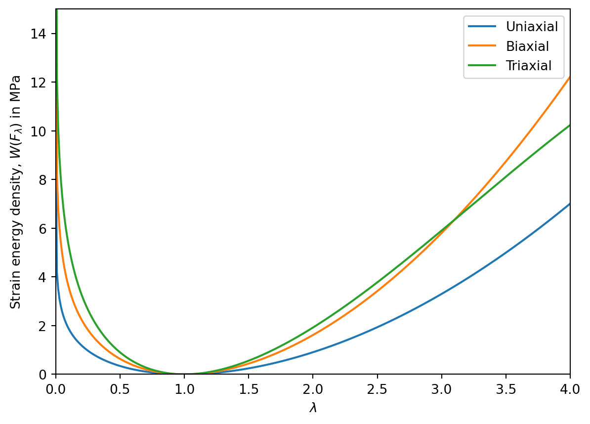

def hello_world():
print("Hello, world!")
hello_world()Hello, world!In this final chapter, we will cover the use of code blocks and embedding video in the notes. This chapter is not rendered on a first download, as it requires Python to be installed, and also Quarto needs to know about it. The Python packages used below are numpy, matplotlib and qrcode; it’s likely that if you use Python regularly for Maths, only the last of these will need installing. You will find further information about how to configure Quarto correctly to work with Python in the Quarto docs. Note that integration with R, Julia and JavaScript are also all possible.
Code blocks are included using triple backticks, and can be used to include code in various programming languages. The first line of the triple backtick block should state the language, e.g. ```python, which ensures that the code is highlighted and styled appropriately for the language. If the name of the language is enclosed in curly braces, Quarto will try to execute it when rendering, so ```{python} starts an executable Python block.
The following executable code block defines a simple Python function, and then runs it. You should see the output of the function in the rendered notes.
If desired, code blocks can be labelled and referenced in the same way as equations, figures, and sections. See below for an example, which should hopefully now be fairly self-explanatory. Note the lst-cap attribute, which provides a caption for the code block.
Code blocks can be used to produce figures, as well as to provide code snippets, which is a really nice feature of Quarto. When using them for figures, it can be useful to hide the code block, but you don’t need to do this if you want students to have access to the code. In fact, code-folding options exist for this purpose to keep the document looking clean. An example of a code-generated figure is provided below. In the markdown, you should be able to see the following opening lines:
#| label: fig-energyplot
#| echo: false
#| fig-cap: "The variation of the Neo-Hookean energy density as a function of various forms of stretch. Here, the parameter values are a=0.6MPa and c=0.6MPa, which are values representative of rubber."
#| fig-alt: "A plot of the Neo-Hookean energy density as a function of stretch for uniaxial, biaxial, and triaxial deformations. The energy density increases with both stretching and compression. Close to the identity, the stored energy is highest for triaxial deformation, then biaxial, followed by uniaxial deformation."Note these lines begin with #|, and set various Quarto attributes for the block. In this case, in order, they set the label for the figure, hide the code block, set the caption and define the alt-text for the figure. The code which follows these lines produces the image for the figure, which will appear rendered in the notes (both HTML and PDF versions).

There are many more options for code blocks, and many can be set globally in your notes. For further information, see the Quarto documentation.
Exercise: Adapt the code above to produce a plot of the quadratic y = x^2+x as a figure, adding an appropriate caption and alt-text.
A further nice feature of Quarto is that you can embed videos in the HTML notes. For example, the following video is embedded in the HTML output from YouTube. Note that for the HTML, it is good practice is to embed video from a third-party website rather than include your own as a raw video file. The reason for this is that third-party hosting sites often provide subtitles for accessibility. To embed a video, simply use the syntax , where url.com/video is the link to the appropriate video.
If you are viewing the PDF version of the notes, you will find that the embdedded video has been replaced by a QR code which can be scanned to access the video. The reason for this is that if you are rendering in both HTML and PDF formats, you need to handle the video appropriately: the default approach is not very clean (try this for yourself and see!). In the markdown below, you’ll see that the QR code is automatically generated using the Python qrcode package. If you copy the code below, make sure to change the video addresses each time it appears, note there are 3 places to do this! Notice that there are two blocks, which show conditionally depending on the render method.
Exercise: Embed a YouTube video of your choice in these notes, and adapt the code above to show a QR code linking to the video in the PDF notes.
Thanks for making it this far! I hope you give Quarto a go. I’m very happy to offer help and advice if you do decide to do so. In addition, Ferran Brosa Planella is also actively using Quarto for notes, so he has said you can ask him for advice too, and please spread the word!
Some additional things that I didn’t have time to talk about include: